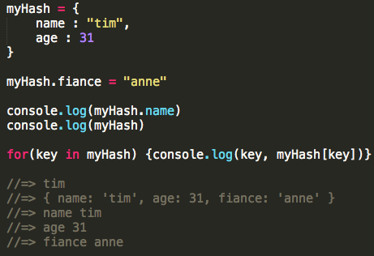
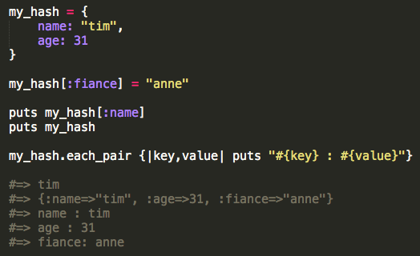
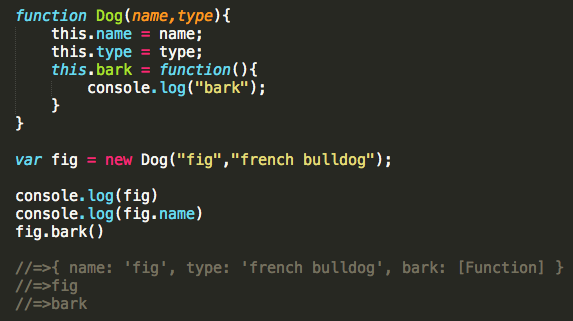

- student: DBC
- mkt mgr + product liaison: TRLA
- timcannady@gmail.com
- twitter.com/tcannadysf
- linked.com/in/timcannady
- github.com/timcannady
JS v RB
JavaScript vs Ruby - Further Observations
Before DBC the most time I'd spent in any language was with JavaScript. I'd be hard-pressed to say, "it was my language," but it's the one I knew the most.
Changing to Ruby and now back to JS has been an interesting experience. I felt a mix of emotions when I first switched: like I was leaving an unfinished project, like I might forget the syntax due to non-use, like I might not understand Ruby as well as I had gotten along with JS.
I think each of these points is worth reflecting on separately, yet this is a technical post. So I'll just say that the roundabout trip has, in short, been a valuable one. I've seen similarities, differences, strengths and weaknesses (at least to a beginner's eye). I'll reflect on a few below, but when it comes to me personally, I'd now say the more languages, the better! Learning new ways to do things has made me a little more capable. And returning to a language that's missing that one cool trick helps me realize what's possible, albeit with a little extra work.
Now that I'm back in JS, I think there's two things that Ruby helped me understand better: Objects (eg Ruby's hash), and Classes.
Object vs Hash
Objects and hashes are both massively important features for these languages. A cryptic blog can't cover everything, but here's some initial comparisons:
- They have similar purposes: both are container objects, both are non-number indexed and both share companionship with number-indexed arrays. In short, they play a similar role in each language.
- They're accessed and updated similarly: both are easy to do so, albeit with a little change in syntax:


Here's two ways they're immediately different:
- Naming conventions: Ruby calls them "hashes" and JS calls them "objects". The latter feels a little funny since Ruby considers everything in the language to be an object. A minor pitfall for a beginner. Next, Ruby calls each item in the hash an "attribute", which is also known as a key. JavaScript refers to this as a "property." It feels like good practice to simply consider both to be keys with respective values.
- Iteration: I'm yet to spend much time working with JavaScript objects, but so far it feels like their iteration is a little more verbose than Ruby's for hashes - which is expected since Ruby is known for being succinct. Both are similar, though note the ability for Ruby to format the output (at least using this technique):


Classes
I think learining Ruby's classes helped clarify JavaScript's approach. Something about the use of 'this' took a while to click in my beginner brain. Here's how we define classes using each:


JavaScript and Ruby fill similar needs with Objects, Hashes and Classes. And familiarizing myself with both has given me more respect for them as they serve vital roles in housing all the data that we morph into awesome applications.
Think a hash's key-value pairs are as boring as Brussels sprouts (with whom they share an odd likelihood)? I sort of did as well. At least until we were challenged to create a game using just a few objects as the foundation. It's pretty amazing what's possible when you start looking at things differently. For example, are the key-value pairs just integers and strings? Or are they names and hitpoints for wizards in a video game? X-Y coordinates for your hidden treasure? Datasets for your next infograph? Like a boring stalk, it's all about what you do with it!

Hang tight for my JavaScript game challenge - I'll be sure to post it to the new Projects section as soon as it's complete. In the meantime, here's a few more comparisons between JS and Ruby.